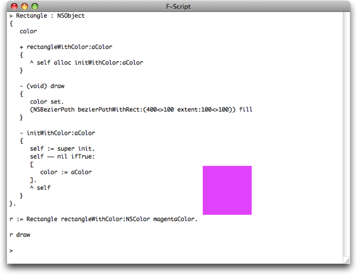
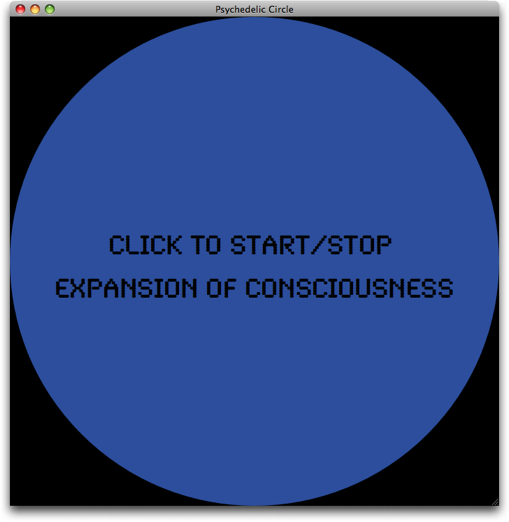

2010年 8月 改訂
F-Script には、動作中に Cocoa クラスを動的に生成できる便利な構文 がある。 この機能は、洗練されたプログラムを開発する為ばかりではなく、即座に実験したり、プロトタイプを作ったり、Cocoa を対話的に使ってみる為にも役立つ。 F-Script コンソールにクラス定義をタイプして、リターンキーを押せば、すぐにその新しいクラスを動かすことができる。 この記事では、この機能について手短に紹介しよう。
何かクラスを定義する為には、それに名前を付け、そのスーパークラスを指定する必要がある。
では、NSObject のサブクラスとして、
Buddy クラスを定義する例を示そう。
以下のコードを F-Script コンソールにタイプすれば、Buddy クラスを動的に生成することができる：
Buddy : NSObject {}
この定義は非常に単純だが、このままではあまり役に立たない。
この新しいクラスには、（そのスーパークラスである NSObject から何がしかを継承しているとはいえ）インスタンス変数やメソッドが何も定義されていないからだ。
幸いなことに、F-Script では、既存のクラスを動的に再定義することができる。
今度は、クラスの初期化メソッドや description メソッドを追加するとともに、いくつかのインスタンス変数（firstName と lastName にしよう）も指定してみよう：
Buddy : NSObject
{
firstName lastName
- initWithFirstName:first lastName:last
{
self := super init.
self ~~ nil ifTrue:
[
firstName := first.
lastName := last
].
^ self
}
- description
{
^ 'Hello, I am your buddy ' ++ firstName ++ ' ' ++ lastName
}
}
このクラス定義には、インスタンス変数の並びと、それに続くメソッドの定義が含まれている。 self や super の意味は、Objective-C や Smalltalk の場合と同じである。
カレット (^) は、リターン命令である。
では今創ったクラスを動かしてみよう。このクラスをインスタンス化すると生成される新たなインスタンスを、変数に代入して評価するのだ。 F-Script コンソールを使って対話的に評価するにはこうすればよい：
> john := Buddy alloc initWithFirstName:'John' lastName:'Doe'
> john
Hello, I am your buddy John Doe
Objective-C と同様、インスタンスメソッドの名前の先頭にはマイナス記号が付き、クラスメソッドの名前にはプラス記号が付く。
例えば、Buddy クラスに、次のようなクラスメソッドを追加することができる：
+ buddyWithFirstName:first lastName:last
{
^ self alloc initWithFirstName:first lastName:last
}
すると、次の様にそれを使うことができる。
> mary := Buddy buddyWithFirstName:'Mary' lastName:'Doe'
> mary
Hello, I am your buddy Mary Doe
メソッド内のローカル変数は、縦棒で挟み、スペースで区切って定義する。
例えば、|foo bar| は foo と bar という名前の二つのローカル変数を定義する。
これらのローカル変数は、自動的に nil に初期化される。
description メソッドを書き換えて、一時的な変数としてのローカル変数の使い方を示そう。
- description
{
|fullName|
fullName := firstName ++ ' ' ++ lastName.
^ 'Hello, I am your buddy ' ++ fullName
}
F-Script で新しく定義されたクラスは、自動的に Cocoa ランタイムに登録される為、このクラスに対して、標準的なツール類が全て利用できるのだ。
例えば、F-Script コンソールに sys browse:john と
入力すれば、グラフィカルなオブジェクトブラウザが開いて、先ほど創ったインスタンスに関する情報を表示するだろう。
図１. Buddy クラスのインスタンスをブラウズする
クラス オブジェクトをブラウズすれば（例えば、sys browse:Buddy
と入力する）、通常通り、クラスメソッドが表示される。
図２. Buddy クラスオブジェクトをブラウズする
一から新しいクラスを定義したり再定義したい訳ではなく、時には、既存のクラスに新しいメソッドを追加したいだけの場合もある。 この機能は、Objective-C のカテゴリーに似ているが、F−Script では、実行時に動的に使うことができるのだ。 この機能は、別々に開発されたオブジェクト指向フレームワークを一緒に動かすような場合に有効だが、同様に、何かを試作したり、新しい設計で実験したりする場合にも、非常に役立つ。 しかも、この機能は、直接 Cocoa クラスを定義できる F-Script の能力の自然な拡張になっている。
Objective-C ランタイムに登録済みのクラスなら、その実装言語（Objective-C, F-Script 等々）が何であれ、全てのクラスに新たな仕掛けを教え込めるのだ。 その構文は簡単だ：クラス名の後に、一対の中括弧を置いて、その中にメソッド定義を書けば良い。 もしも、追加したメソッドが、既にクラス内に存在していた場合、それは新しいメソッドに置き換えられる。
例えば、こうすれば、NSObject クラスに print メソッドを追加できる：
NSObject
{
- (void)print
{
"レシーバの description を標準出力に印字する。"
stdout print:self description
}
}
もちろん、クラスメソッドも同様に追加できる。例えば、次のコードで NSNumber クラスに pi メソッドを追加することができる。
NSNumber
{
+ pi
{
^ 3.141592653589793
}
}
次の例は、これまでよりちょっとだけ高級だが、NSArray クラスに、（ collect:, inject:into:, groupedBy: 及び、select: という名前の ）
一般的な Smalltalk コレクション メソッドを、いくつか追加する。
NSArray
{
- collect:transformer
{
"レシーバの各要素を引数にして、transformer （１引数のブロック）を
評価して、その結果を集めた新しい配列を返す"
^ transformer value:@self
}
- groupedBy:criteria
{
"配列の全ての要素を引数にして、criteria（１引数のブロック）を評価
した結果をキーとして、その各キーの値がそのキーに評価される 要素の
配列になっている NSDictionary オブジェクトを返す。
例えば、
{'Hello', 'guys', 'I', 'enjoy', 'programming', 'with', 'style'}
groupedBy:#length は、
以下のキー／値アソシエーションを要素とするディクショナリーを返す:
1 -> {'I'},
4 -> {'guys', 'with'},
5 -> {'hello', 'enjoy', 'style'},
11 -> {'programming'}"
| result |
result := #{}.
self do:[:each|
| key group |
key := criteria value:each.
group := result at:key.
group == nil ifTrue:
[
group := {}.
result at:key put:group.
].
group addObject:each.
].
^ result
}
- inject:initialValue into:operation
{
"前回の評価結果とレシーバの各要素を二つの引数に使って、operation
（２引数のブロック）を評価した最終の結果を返す。
operation の最初の評価は、第一引数として initialValue を使い、
第二引数として、レシーバの最初の要素を使って実行される。
例えば、配列 anArray の要素の値の総和を取るには、こう使う:
anArray inject:0 into:#+ "
| nextValue |
nextValue := initialValue.
self do:[:each|
nextValue := operation value:nextValue value:each
].
^ nextValue
}
- select:discriminator
{
"discriminator（２引数のブロック）が true に評価されるレシーバの
要素を含む新しい配列を返す。discriminator は、レシーバの各要素を
引数として、評価される。
discriminator が true に評価される要素が、新配列に追加される。"
^ self where:(discriminator value:@self)
}
}
インスタンス変数に加えて、クラスインスタンス変数を定義することもできる。
クラスインスタンス変数は、クラスにとって、インスタンスにとってのインスタンス変数に当たるものだ（静かに息をして、この文をもう一度読んでみよう）。
それは、クラスオブジェクトにとってのプライベートデータを表すものなのだ。
この変数にアクセスできるのは、クラスメソッドだけである。
クラスや、そのサブクラスを定義すると、それら自身の為の記憶領域が確保される。
クラスインスタンス変数を定義する為には、その変数名の後に「 (class instance variable) 」という注釈を付けることになっている。
次の例では、自分自身に何回 alloc メッセージが送られたかを憶えているクラス を定義する為に、クラスインスタンス変数を使っている：
MyClass : NSObject
{
"アロケーションしたことを覚えているクラスインスタンス変数を定義する"
allocationCount (class instance variable)
"+initialize メソッドは、クラスインスタンス変数を初期化するのに便利"
+ (void)initialize
{
allocationCount := 0
}
"アロケーションを実行する"
+ alloc
{
allocationCount := allocationCount + 1.
^ super alloc
}
"クラスが、今までに何回 alloc メッセージを受け取ったかを返す"
+ allocationCount
{
^ allocationCount
}
}
F-Script でメソッドを定義すると、それは自動的に Objective-C のランタイムに登録される。 しかも、この新しいメソッドは、ランタイムから見ると、他の Objective-C メソッドと全く同じ様に見えるのだ。 とりわけ、これは、このメソッドが Objective-C コードから呼び出されることもあり得ることを意味する。
この事実は、F-Script の構文にも現れている。F-Script のメソッドは、外から見る限り Objective-C メソッドと見分けがつかない。
Objective-C メソッド
- (float) doSomethingWithFoo:(int)x bar:(Bar *)y
{
... Objective-C code ...
}
F-Script メソッド
- (float) doSomethingWithFoo:(int)x bar:(Bar *)y
{
... F-Script code ...
}
上の例では、メソッド定義の形式に明示的な型付けを利用している。
戻り値や引数としてオブジェクトではない値を使うメソッドを呼び出す形でコールバックしてくる Objective-C コードに、F-Script のオブジェクトを渡したい時、この形式が特に役立つ。
まさにこの場合、F-Script で定義されるメソッドであっても、起動された時にその引数や戻り値を正しく処理する為には、それらの型が何なのかを知らなければならないのだ。
もちろん、F-Script は純粋なオブジェクト言語であり、引数で渡ってくる実際の値は、対応するオブジェクトに自動的に置き換えられてから受け取られ、戻り値のオブジェクトも、
メソッド定義で呼び出し先に約束されているデータ型に、自動的に置き換えられてから返される ので、メソッド内部の F-Script コードは、オブジェクトを扱うだけで良い。
現在サポートされている型の一覧を以下に示す。
- id
- Class
- SEL
- BOOL
- _Bool
- char
- unsigned char
- short
- unsigned short
- int
- unsigned int
- long
- unsigned long
- long long
- unsigned long long
- NSInteger
- NSUInteger
- float
- double
- CGFloat
- NSRange
- NSPoint
- NSRect
- NSSize
- CGPoint
- CGRect
- CGSize
- CGAffineTransform
- void *
Objective-C の様に、クラス名の後に * が付いたオブジェクト型（ 例えば NSString * ）も使うことができる。
ポインタを指定する為に、型の後ろに必要な数だけ * を置いてよい（ 例えば unsigned int ** ）。
最後に、メソッドが何も返さないことを示す為には void が使われる。
明示的に型が指定されていなければ、デフォルトとして、Objective-C と同様 id 型が仮定される。
（クラスを再定義したり、カテゴリーを使って）既存のメソッドを新しいものに置き換える場合は、新しいメソッドの記述は、既存のメソッドの記述と互換性がなければならない
（もしも互換性がない場合、プログラミングエラーを知らせる例外が発生する）。
つまり、それらは、戻り値の型と引数の型がそれぞれ同一でなければならないということだ。
全てのオブジェクト型は、同類だと見なされることに注意しよう。例えば、NSString * と宣言されている引数が、
新しいメソッドでは NSNumber * と宣言されていたとしてもエラーにならない。
Rectangle クラスというものを定義してみよう。このインスタンスは、ある色に初期化して、それ自身を描画させることができる。 この例題では、Objective-C クラス（ここでは NSObject）のサブクラスを作り、インスタンス変数（color）やクラスメソッド、そして二つのインスタンスメソッドを定義して動かすまでを、実 際にやってお見せしよう。 これによって、ネイティヴな、従って F-Script や Objective-C から利用可能な Cocoa クラスが動的に生成される。
Rectangle : NSObject
{
color
+ rectangleWithColor:aColor
{
^ self alloc initWithColor:aColor
}
- (void)draw
{
color set.
(NSBezierPath bezierPathWithRect:(400<>100 extent:100<>100)) fill
}
- initWithColor:aColor
{
self := super init.
self ~~ nil ifTrue:
[
color := aColor
].
^ self
}
}
これで、この Rectangle クラスをインスタンス化して、それを描画することができる。
r := Rectangle rectangleWithColor:NSColor magentaColor.
r draw
これを実行すると、F-Script コンソールの表示は以下の様になるだろう。
［訳注］： 図３の様に、クラス定義とインスタンス化を続けて入力してから実行する場合は、クラス定義文の最後のピリオドを忘れずに !
図３. Rectangle クラスを定義して使ってみる
次のプログラムでは、NSView クラスのサブクラス化について解説しよう。 このプログラムは、様々な色で明滅して サイケデリックな効果を引き起すことができる円 を表示する。 これが、そのアプリケーションのスクリーンショットである。
図４. 動作中の PsychedelicCircleView
このプログラムの中心となる部品は、PsychedelicCircleView
という名前の NSView の
サブクラスだ。このグラフィカル部品は、円のアニメーション表示と、ユーザーにサイケデリックプロセスを開始させたり停止させたりする為のマウスイベント処理を受け持つ。
その実現の為に、このクラスは、そういう場合の標準メソッド drawRect: と mouseDown: を実装している。
この NSView のサブクラスのソースコードは、以下に示す通りである。 これを実行する為には、このソースコードを、F-Script コンソールにコピー／ペーストするだけでよい。 それから、この部品を画面に表示する為の（このずっと下の方にある）コードも、コピー／ペーストして欲しい。
"Cocoa の NSView のサブクラスとして PsychedelicCircleView クラスを定義する"
PsychedelicCircleView : NSView
{
"インスタンス変数"
timer "ビューをアニメートする為に使われる NSTimer オブジェクト"
message "表示用メッセージ"
attributes "表示用アトリビュートを保持する辞書"
"明示的初期化メソッドを定義する"
- initWithFrame:(NSRect)frame
{
self := super initWithFrame:frame.
self ~~ nil ifTrue:
[
|font| "フォントオブジェクトを保持するインスタンス変数"
"使用するフォントを決定する：可能なら Synchro LET を使い、無ければ デフォルトユーザーフォント を使う"
font := NSFont fontWithName:'Synchro LET' size:40.
font == nil ifTrue:[ font := NSFont userFontOfSize:40 ].
"メッセージ表示用のアトリビュート辞書を初期化する"
attributes := #{NSFontAttributeName -> font}.
"表示用メッセージを初期化する"
message := ' Click to start/stop\nexpansion of consciousness'.
].
^ self
}
"ビューに表示する為に Cocoa が呼び出すメソッドを定義する"
- (void) drawRect:(NSRect)aRect
{
"ローカル変数を定義する"
|red green blue size x y|
"色の３成分の指定に使う乱数を生成する"
red := 10 random / 9.
green := 10 random / 9.
blue := 10 random / 9.
"色を設定して円を描く"
(NSColor colorWithCalibratedRed:red green:green blue:blue alpha:1) set.
(NSBezierPath bezierPathWithOvalInRect:self bounds) fill.
"サイケデリックモードがアクティブでなければ、メッセージを表示する"
timer == nil ifTrue:
[
"メッセージを中央に表示させる為に、その座標を計算する"
size := message sizeWithAttributes:attributes.
x := self bounds extent x / 2 - (size width / 2).
y := self bounds extent y / 2 - (size height / 2).
"メッセージを描く"
message drawAtPoint:x<>y withAttributes:attributes.
].
}
"ビューがクリックされた時に Cocoa が呼び出すメソッドを定義する"
- (void) mouseDown:(NSEvent *)theEvent
{
timer == nil ifTrue:
[
"サイケデリックプロセスを動かす為の NSTimer オブジェクトを生成する"
timer := NSTimer scheduledTimerWithTimeInterval:0.01
target:[self setNeedsDisplay:YES]
selector:#value
userInfo:nil
repeats:YES
]
ifFalse:
[
"サイケデリックプロセスを停止する"
timer invalidate.
timer := nil.
self setNeedsDisplay:YES.
]
}
}.
さあこれで、ビュークラスが定義できたので、これをウィンドウの中に配置して動かしてみよう：
"ウィンドウをインスタンス化して、必要な設定を行う"
window := NSWindow alloc initWithContentRect:(0<>0 extent:700<>700)
styleMask:NSTitledWindowMask +
NSClosableWindowMask +
NSMiniaturizableWindowMask +
NSResizableWindowMask
backing:NSBackingStoreBuffered
defer:NO.
window setBackgroundColor:NSColor blackColor; setReleasedWhenClosed:NO; setTitle:'Psychedelic Circle'; center.
"サイケデリックサークルをインスタンス化して、必要な設定をする"
circle := PsychedelicCircleView alloc initWithFrame:window contentView bounds.
circle setAutoresizingMask:NSViewWidthSizable + NSViewHeightSizable.
"サークルビューをウィンドウの中に配置する"
window contentView addSubview:circle.
"ウィンドウを画面に表示する"
window makeKeyAndOrderFront:nil.
上のコードは、ウィンドウを開いて、サイケデリックサークルを表示するはずだ。
さて、動作中のクラスを再定義する 実験をしてみる良い機会だ。
サイケデリックな円が明滅している最中に、プログラムを変更して、すぐにその変更の効果を見ることができるのだ。
例えば、drawRect: メソッドの中の bezierPathWithOvalInRect: 呼出しを bezierPathWithRect: 呼出しに置き換えてみよう。
すると、これまで見えていた明滅する円が、明滅する四角形に変化したことに気付くだろう。
この記事を書いている時点では、このプログラムの全てのユーザー（つまり、僕と僕の猫だ）が、このサイケデリックサークルを見たことで意識の拡大を経験している訳ではないことに注意されたい。 実は、全ユーザーの 50% は、このプログラムで拡大したのは頭痛だけだ と断言している。他の 50% は、いつもそうなのだが、これを見ると必ず、奇妙な声をあげながら、蠅を捕まえようとする。
Copyright © 2009-2010 Philippe Mougin
Translation-ja © 2012 Hideo Haga ［日本語版］